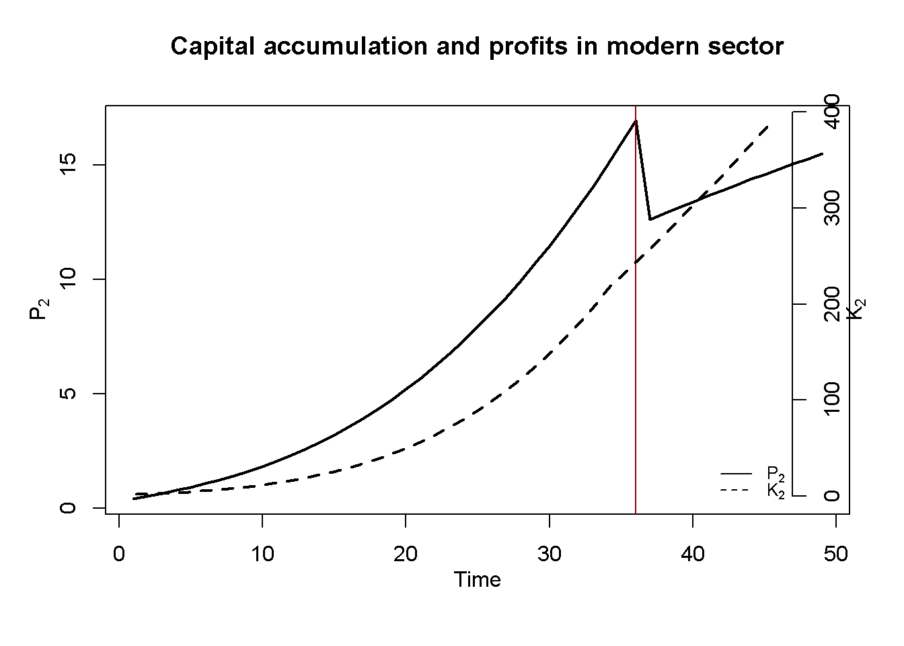
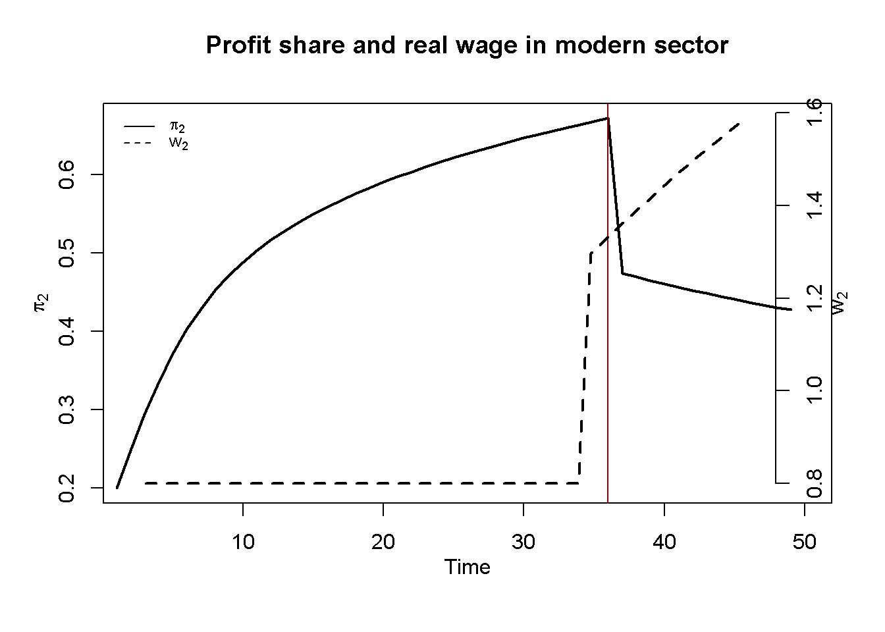

# Clear the environment
rm(list=ls(all=TRUE))
# Set number of periods
Q=250
# Set number of scenarios (including baseline)
S=3
# Set period in which shock/shift will occur
s=1
# Create (S x Q)-matrices that will contain the simulated data
Y1=matrix(data=1,nrow=S,ncol=Q) # Output in sector 1 (traditional)
Y2=matrix(data=1,nrow=S,ncol=Q) # Output in sector 2 (modern)
L1=matrix(data=1,nrow=S,ncol=Q) # employment in sector 1
L2=matrix(data=1,nrow=S,ncol=Q) # employment in sector 2
w2=matrix(data=1,nrow=S,ncol=Q) # real wage sector 2
MPL2 = matrix(data=1, nrow=S, ncol=Q) # marginal product of labour in sector 2
K=matrix(data=1,nrow=S,ncol=Q) # capital stock (only in sector 2)
P2=matrix(data=1,nrow=S,ncol=Q) # profits in sector 2
# Set fixed parameter values
alpha=0.9 # labour elasticity of output, sector 1
rho=1 # wage premium
L=20 # total labour supply (exogenous)
lambda=10 # employment at which MPL in sector 1 becomes zero
beta=0.7 # labour elasticity of output, sector 2
delta = 0.5 # sensitivity of employment in sector 2 to deviation of MPL2 from w2
# Set baseline parameter values
w1=matrix(data=0.4,nrow=S,ncol=Q) # subsistence real wage sector 1
gamma=matrix(data=0.12, nrow=S, ncol=Q) # labour supply coefficient, sector 2
# Set parameter values for different scenarios
w1[2,s:Q]=0.3 # scenario 2: fall in subsistence wage
gamma[3,s:Q]=0.17 # scenario 3: rise in labour supply elasticity
# Create vectors that will record when the turning point occurs and when the simulation ends
tp = rep(NA, S)
end = rep(NA, S)
# Initialise such that there is surplus labour (L1 > lambda)
L1[,1]= 0.9*L
L2[,1]= L - L1[,1]
# Simulate the model by looping over T time periods for S different scenarios
for (i in 1:S){
# Create flag that will be set to TRUE when the turning point has been reached
cond = FALSE
# Inititalise time index
t = 2
# Run the model as long as the number of periods Q hasn't been reached yet and employment in sector 1 is positive
while (t <= Q && L1[i, t-1] > 0) {
for (iterations in 1:1000){
## Model equations
# Output sector1 and wages sector 2
if (!cond && L1[i, t-1] > lambda) {
Y1[i,t] = lambda^alpha
w2[i,t]= w1[i,t]*(1 + rho)
}
else{
Y1[i,t] = (L1[i,t]^alpha)
w2[i,t]= gamma[i,t]*L2[i,t]
cond = TRUE # set the flag to TRUE once the condition is violated
#(this prevents the iterations loop from getting trapped between the two conditions)
}
# Employment sector 1
L1[i,t] = L - L2[i,t]
# Output sector 2
Y2[i,t]=(L2[i,t]^beta)*(K[i,t]^(1-beta))
# MPL sector 2
MPL2[i,t] = beta* (Y2[i, t]/L2[i, t])
# Employment sector 2
L2[i,t] =L2[i, t-1] + delta*(MPL2[i,t-1] - w2[i,t-1])
# Profits sector 2
P2[i,t]=Y2[i,t] - w2[i,t]*L2[i,t]
# Capital accumulation sector 2
K[i,t]= K[i,t-1] + P2[i,t-1]
} # close iterations loop
if (L1[i, t] > lambda) {
tp[i] = t # record when turning point occurs
}
if (L1[i, t] <= 0) {
end[i] = t # record when L1 becomes non-positive, which terminates the simulation
}
# Update tine index
t = t + 1
} # close time loop
} # close scenarios loop
# Calculate profits in S1
P1=Y1 - w1*L1
#Calculate aggregate profit share
PS=(P1 + P2)/(Y1 + Y2)
# Calculate sectoral profit shares
PS1=(P1)/(Y1)
PS2=(P2)/(Y2)16 A Lewis Model of Economic Development
Overview
This model captures some key features of W. Arthur Lewis (1954)’ two-sector model of the growth process of a developing country. The model describes the development process as one where a modern urban sector draws labour inputs from a traditional subsistence sector that is characterised by surplus labour, i.e. labour that does not produce any additional output (reflected in a zero marginal product). Workers in the traditional sector are paid a fixed subsistence wage. The presence of surplus labour allows the modern sector to attract workers from the traditional sector for a small wage premium above the subsistence wage. This enables the modern sector to make excess profits that are reinvested and thus drive rapid capital accumulation in the modern sector. As a result, the economy undergoes industrialisation. This process of rapid structural change comes to an end when the surplus labour in the traditional sector is depleted. Labour supply then becomes sensitive to the real wage, leading to a slowdown in the growth of profits and capital accumulation.
We present a formal version of the model that is adapted from the graphical representation in Todaro and Smith (2015), pp. 124-127.
The Model
\[ Y_{1t}= \begin{cases} \lambda^\alpha, & \text{if } L_{1t-1} > \lambda \\ L^\alpha_{1t},& \text{if } L_{1t-1}\leq \lambda \end{cases} \tag{16.1}\]
\[ w_{1t} = w^S \tag{16.2}\]
\[ L_{1t} = L - L_{2t} \tag{16.3}\]
\[ Y_{2t} = L_{2t}^\beta K_{2t}^{1-\beta} \tag{16.4}\]
\[ w_{2t}= \begin{cases} w^S(1 + \rho), & \text{if } L_{1t-1} > \lambda \\ \gamma L_{2t},& \text{if } L_{1t-1}\leq \lambda \end{cases} \tag{16.5}\]
\[ MPL_{2t}= \frac{\partial Y_{2t}}{\partial L_{2t}} = \frac{\beta Y_{2t}}{L_{2t}} \tag{16.6}\]
\[ L_{2t}= L_{2t-1} + \delta(MPL_{2t-1} - w_{2t-1}) \tag{16.7}\]
\[ P_{2t}=Y_{2t} - w_{2t}L_{2t} \tag{16.8}\]
\[ K_{2t}=K_{2t-1} + P_{2t-1} \tag{16.9}\]
where the subscripts 1 and 2 refer to the traditional and modern sector, respectively, and \(Y_t\), \(w_t\), \(L_t\), \(MPL_t\), \(K_t\), and \(P_t\) represent output, the real wage rate, employment, the marginal product of labour, the capital stock, and profits, respectively.
Equation 16.1 describes output determination in the traditional sector. The variable \(\lambda\) is the employment level beyond which the marginal product of labour (MPL) in sector 1 becomes zero. As long as employment is above this threshold, there is surplus labour and output is fixed at the level implied by the level of employment for which the MPL becomes zero (\(\lambda\)). If actual employment falls below this level, the sector faces a production function that is increasing in employment but with diminishing marginal returns \((\alpha \in (0,1))\). By Equation 16.2, the real wage in the traditional sector is an exogenously given subsistence wage \(w^S\). Equation 16.3 says that the level of employment in the traditional sector is residually determined by the total labour supply net of employment in the modern sector. Total labour is taken to be exogenous. Unlike the traditional sector, the modern sector employs capital. Equation 16.4 is the production function of the modern sector, which exhibits constant returns to scale and diminishing marginal returns \((\beta\in (0,1))\). Equation 16.5 specifies wage determination in the modern sector. If there is surplus labour in the traditional sector, the modern sector pays a wage premium \(\rho\) on the subsistence wage. As soon as surplus labour is depleted, the modern sector faces an upward-sloping labour supply curve, which we model for simplicity as a linear function with slope coefficient \(\gamma\). Equation 16.6 specifies the marginal product of labour of the modern sector: \(MPL_{2t}=\beta L_{2t}^{\beta-1} K_{2t}^{1-\beta} = \beta \frac{Y_{2t}}{L_{2t}}\). Equation 16.7 is the labour demand curve of the modern sector. To maximise profits, the firm would have to equalise the real wage and the MPL: \(w_{2t}=MPL_{2t}\). Equation 16.7 specifies this as a gradual process, where the rate at which the modern firm attracts workers from the traditional sector is increasing in the gap between their marginal product and the fixed wage the firm pays these workers. Finally, Equation 16.8 defines profits in the modern sector, and Equation 16.9 describes capital accumulation in that sector, where it is assumed that all profits are invested \((P_{2t}=I_{2t})\).
Simulation
Parameterisation
Table reports the parameterisation used in the simulation. All scenarios are initialised such that there is surplus labour (\(L_{10} > \lambda\)).
Table 1: Parameterisation
| Scenario | \(L\) | \(\lambda\) | \(\alpha\) | \(\beta\) | \(\delta\) | \(w^S\) | \(\gamma\) |
|---|---|---|---|---|---|---|---|
| 1: baseline | 20 | 10 | 0.9 | 0.7 | 0.5 | 0.4 | 0.12 |
| 2: rise subsistence wage (\(w^S\)) | 20 | 10 | 0.9 | 0.7 | 0.5 | 0.3 | 0.12 |
| 3: rise in labour supply elasticity (\(\gamma\)) | 20 | 10 | 0.9 | 0.7 | 0.5 | 0.4 | 0.17 |
Simulation code
Python code
import numpy as np
# Set number of periods
Q = 250
# Set number of scenarios (including baseline)
S = 3
# Set period in which shock/shift will occur
s = 1
# Create (S x Q)-matrices that will contain the simulated data
Y1 = np.ones((S, Q)) # Output in sector 1 (traditional)
Y2 = np.ones((S, Q)) # Output in sector 2 (modern)
L1 = np.ones((S, Q)) # Employment in sector 1
L2 = np.ones((S, Q)) # Employment in sector 2
w2 = np.ones((S, Q)) # Real wage sector 2
MPL2 = np.ones((S, Q)) # Marginal product of labour in sector 2
K = np.ones((S, Q)) # Capital stock (only in sector 2)
P2 = np.ones((S, Q)) # Profits in sector 2
# Set fixed parameter values
alpha = 0.9 # Labour elasticity of output, sector 1
rho = 1 # Wage premium
L = 20 # Total labour supply (exogenous)
lambda_ = 10 # Employment at which MPL in sector 1 becomes zero
beta = 0.7 # Labour elasticity of output, sector 2
delta = 0.5 # Sensitivity of employment in sector 2 to deviation of MPL2 from w2
# Set baseline parameter values
w1 = np.full((S, Q), 0.4) # Subsistence real wage sector 1
gamma = np.full((S, Q), 0.12) # Labour supply coefficient, sector 2
# Set parameter values for different scenarios
w1[1, s:Q] = 0.3 # Scenario 2: fall in subsistence wage
gamma[2, s:Q] = 0.17 # Scenario 3: rise in labour supply elasticity
# Create vectors that will record when the turning point occurs and when the simulation ends
tp = np.full(S, np.nan)
end = np.full(S, np.nan)
# Initialise such that there is surplus labour (L1 > lambda)
L1[:, 0] = 0.9 * L
L2[:, 0] = L - L1[:, 0]
# Simulate the model by looping over time periods for different scenarios
for i in range(S):
cond = False # Flag for turning point condition
t = 1 # Initialize time index (Python uses 0-based indexing)
# Run the model as long as Q periods haven't been reached and employment in sector 1 is positive
while t < Q and L1[i, t-1] > 0:
for _ in range(1000): # Iterations loop
# Model equations for output sector 1 and wages sector 2
if not cond and L1[i, t-1] > lambda_:
Y1[i, t] = lambda_**alpha
w2[i, t] = w1[i, t] * (1 + rho)
else:
Y1[i, t] = L1[i, t]**alpha
w2[i, t] = gamma[i, t] * L2[i, t]
cond = True # Set flag once condition is violated
# Employment sector 1
L1[i, t] = L - L2[i, t]
# Output sector 2
Y2[i, t] = (L2[i, t]**beta) * (K[i, t]**(1 - beta))
# MPL sector 2
MPL2[i, t] = beta * (Y2[i, t] / L2[i, t])
# Employment sector 2
L2[i, t] = L2[i, t-1] + delta * (MPL2[i, t-1] - w2[i, t-1])
# Profits sector 2
P2[i, t] = Y2[i, t] - w2[i, t] * L2[i, t]
# Capital accumulation sector 2
K[i, t] = K[i, t-1] + P2[i, t-1]
# Record turning point
if L1[i, t] > lambda_:
tp[i] = t
# Record when L1 becomes non-positive
if L1[i, t] <= 0:
end[i] = t
# Update time index
t += 1
# Calculate profits in sector 1
P1 = Y1 - w1 * L1
# Calculate aggregate profit share
PS = (P1 + P2) / (Y1 + Y2)
# Calculate sectoral profit shares
PS1 = P1 / Y1
PS2 = P2 / Y2Plots
Figure 16.1 - Figure 16.3 display the model’s dynamics under the baseline scenario. The red vertical line marks the ‘Lewis turning point’, which is the period in which the surplus labour in the traditional sector is depleted \((L_{1t}<\lambda)\). It can be seen that before the Lewis turning point is reached, output in the modern sector grows exponentially thanks to the availability of cheap surplus labour whose employment comes with rising profits. After the turning point, output continues to increase but at a lower rate. This is because as the surplus labour in the traditional sector is depleted, the modern sector faces an upward-sloping labour supply curve. As a result, real wages increase and profits are reduced. This slows down capital accumulation and growth. In the traditional sector, output falls after the turning point as the sector now faces diminishing marginal return to labour.
# Set start and end periods for plots
Tmax=end[1]-2
Tmin=2
#Output in the two sectors, baseline
plot(Y1[1, Tmin:Tmax],type="l", col=1, lwd=2, lty=1, xlab="", ylab="Y", ylim=range(Y1[1, Tmin:Tmax],Y2[1, Tmin:Tmax]))
title(main="Output in traditional (Y1) and modern (Y2) sector", xlab = 'Time',cex=0.8 ,line=2)
lines(Y2[1, Tmin:Tmax],lty=2)
abline(v = tp[1], col = "darkred")
legend("topleft", legend=c("Y1", "Y2"),
lty=1:2, cex=0.8, bty = "n", y.intersp=0.8)
#Employment in the two sectors, baseline
plot(L1[1, Tmin:Tmax],type="l", col=1, lwd=2, lty=1, xlab="", ylab="L", ylim=range(L1[1, Tmin:Tmax],L2[1, Tmin:Tmax]))
title(main="Employment in traditional (L1) and modern (L2) sector", xlab = 'Time',cex=0.8 ,line=2)
lines(L2[1, Tmin:Tmax],lty=2)
abline(v = tp[1], col = "darkred")
legend("right", legend=c("L1", "L2"),
lty=1:2, cex=0.8, bty = "n", y.intersp=0.8)
#Profits and capital accumulation in manufacturing, baseline
plot(P2[1, Tmin:Tmax],type="l", col=1, lwd=2, lty=1, xlab="", ylab="", ylim=range(P2[1, Tmin:Tmax]))
title(main="Capital accumulation and profits in modern sector", ylab = 'P', xlab = 'Time', cex=0.8, line=2)
abline(v = tp[1], col = "darkred")
par(mar = c(5, 4, 4, 4) + 0.3)
par(new = TRUE)
plot(K[1, Tmin:Tmax],type="l", col=1, lwd=2, lty=2, font.main=1,cex.main=1,ylab = '', axes=FALSE,
xlab = '',ylim = range(K[1, Tmin:Tmax]),cex.axis=1,cex.lab=0.75)
axis(side = 4, at = pretty(range(K[1, Tmin:Tmax])))
mtext("K", side = 4, line = 2)
legend("bottomright", legend=c("P", "K"),
lty=1:2, cex=0.8, bty = "n", y.intersp=0.8)

Figure 16.4 and Figure 16.5 illustrate the distributional implications of the model. Before the Lewis turning point, the profit share of the modern sector increases, as firms benefit from a real wage that is fixed below the marginal product of labour. After the turning point, real wages jump upwards and begin to increase further, gradually closing the gap with the marginal product. As a result, the profit share falls and embarks on a downward convergence to the level implied by the marginal product of labour.1 The aggregate profit share broadly displays an inverted U-shaped pattern.
# Real wage and profit share in manufacturing
plot(PS2[1, Tmin:Tmax],type="l", col=1, lwd=2, lty=1, xlab="", ylab="", xlim=range(Tmin:Tmax), ylim=range(PS2[1, Tmin:Tmax]))
title(main="Profit share and real wage in modern sector",ylab = 'pshare2', xlab = 'Time', cex=0.8, line=2)
abline(v = tp[1], col = "darkred")
par(mar = c(5, 4, 4, 4) + 0.3)
par(new = TRUE)
plot(w2[1, Tmin:Tmax],type="l", col=1, lwd=2, lty=2, font.main=1,cex.main=1,ylab = '', axes=FALSE, xlim=range(0:Tmax),
xlab = '', ylim = range(w2[1, Tmin:Tmax]), cex.axis=1,cex.lab=0.75)
axis(side = 4, at = pretty(range(w2[1, Tmin:Tmax])))
mtext("w2", side = 4, line = 2)
legend("topleft", legend=c("pshare2", "w2"),
lty=1:2, cex=0.8, bty = "n", y.intersp=0.8)

# Aggregate profit share
plot(PS[1, Tmin:Tmax],type="l", col=1, lwd=2, lty=1, xlab="", ylab="", xlim=range(Tmin:Tmax), ylim=range(PS[1, Tmin:Tmax]))
title(main="Aggregate profit share",ylab = '', xlab = 'Time', cex=0.8, line=2)
abline(v = tp[1], col = "darkred")Figure 17.2 compares output dynamics in the modern sector for the baseline scenario with scenario 2 in which the subsistence wage \(w^s\) is fixed at a lower level and with scenario 3 in which the labour supply elasticity \(\gamma\) the modern sector faces after the turning point is higher. It can be seen that for a lower subsistence wage, the modern sector grows faster and the Lewis turning point is reached earlier. For a higher labour supply elasticity, the labour supply curve after the turning point is steeper, which leads to a faster increase in the real wage, a stronger squeeze of profits, and thus slower output growth. These results illustrate the Classical nature of the model, whereby capital accumulation is driven by profits. Thus, any reduction in profits slows down the growth process.
Tmax=end[2]-2
plot(Y2[1, Tmin:Tmax],type="l", col=1, lwd=2, lty=1, xlim=range(Tmin:Tmax), xlab="", ylab="Y2", ylim=range(Y2[1, Tmin:Tmax],Y2[2, Tmin:Tmax]))
title(main="Output in modern sector", xlab = 'Time',cex=0.8 ,line=2)
lines(Y2[2, Tmin:Tmax],lty=2)
lines(Y2[3, Tmin:Tmax],lty=3)
abline(v = tp[1], col = "darkred")
abline(v = tp[2], col = "red")
legend("bottomright", legend=c("1: baseline", "2: lower subsistence wage", "3: higher labour supply elasticity"),
lty=1:3, cex=0.8, bty = "n", y.intersp=0.8)
Python code
### Plots (here only for output)
import matplotlib.pyplot as plt
# Set start and end periods for plots (set as integers)
Tmax = int(end[0] -2)
Tmin = int(2)
# Output in the two sectors, baseline
plt.plot(range(Tmin, Tmax + 1), Y1[0, Tmin:Tmax + 1], 'k-', linewidth=2, label='Y1')
plt.plot(range(Tmin, Tmax + 1), Y2[0, Tmin:Tmax + 1], 'k--', linewidth=2, label='Y2')
# Highlight Lewis turning point
plt.axvline(x=tp[0], color='darkred', linestyle='-')
# Set plot labels and title
plt.title('Output in traditional (Y1) and modern (Y2) sector')
plt.xlabel('Time')
plt.ylabel('Y')
plt.ylim(min(Y1[0, Tmin:Tmax]), max(Y2[0, Tmin:Tmax]))
# Add legend
plt.legend(loc='upper left')
# Show the plot
plt.show()Directed graph
Another perspective on the model’s properties is provided by its directed graph. A directed graph consists of a set of nodes that represent the variables of the model. Nodes are connected by directed edges. An edge directed from a node \(x_1\) to node \(x_2\) indicates a causal impact of \(x_1\) on \(x_2\).
## Create directed graph
# Construct auxiliary Jacobian matrix for 9 variables:
# Y1,Y2,L1,L2,w1,w2,P2,K, MPL2
M_mat=matrix(c(0, 0, 1, 0, 0, 0, 0, 0, 0,
0, 0, 0, 1, 0, 0, 0, 1, 0,
0, 0, 0, 1, 0, 0, 0, 0, 0,
0, 0, 0, 0, 0, 1, 0, 0, 1,
0, 0, 0, 0, 0, 0, 0, 0, 0,
0, 0, 0, 0, 1, 0, 0, 0, 0,
0, 1, 0, 1, 0, 1, 0, 0, 0,
0, 0, 0, 0, 0, 0, 1, 0, 0,
0, 1, 0, 1, 0, 0, 0, 0, 0), 9, 9, byrow=TRUE)
# Create adjacency matrix from transpose of auxiliary Jacobian
A_mat=t(M_mat)
# Create directed graph from adjacency matrix
library(igraph)
dg= graph_from_adjacency_matrix(A_mat, mode="directed", weighted= NULL)
# Define node labels
V(dg)$name=c(expression(Y[1]), expression(Y[2]), expression(L[1]), expression(L[2]),
expression(w[1]), expression(w[2]), expression(P[2]), "K", "MPL")
# Plot directed graph
plot(dg, main="Directed Graph of Lewis Model", vertex.size=20, vertex.color="lightblue",
vertex.label.color="black", edge.arrow.size=0.3, edge.width=1.1, edge.size=1.2,
edge.arrow.width=1.2, edge.color="black", vertex.label.cex=1.2,
vertex.frame.color="NA", margin=-0.08)
Python code
# Create directed graph
import networkx as nx
# Create the adjacency matrix (M_mat in R)
M_mat = np.array([[0, 0, 1, 0, 0, 0, 0, 0, 0],
[0, 0, 0, 1, 0, 0, 0, 1, 0],
[0, 0, 0, 1, 0, 0, 0, 0, 0],
[0, 0, 0, 0, 0, 1, 0, 0, 1],
[0, 0, 0, 0, 0, 0, 0, 0, 0],
[0, 0, 0, 0, 1, 0, 0, 0, 0],
[0, 1, 0, 1, 0, 1, 0, 0, 0],
[0, 0, 0, 0, 0, 0, 1, 0, 0],
[0, 1, 0, 1, 0, 0, 0, 0, 0]])
# Transpose the matrix to get A_mat
A_mat = M_mat.transpose()
# Create a directed graph from the adjacency matrix using networkx
G = nx.DiGraph(A_mat)
# Define the node labels as expressions for plotting
nodelabs = {0: r'$Y_1$', 1: r'$Y_2$', 2: r'$L_1$', 3: r'$L_2$',
4: r'$w_1$', 5: r'$w_2$', 6: r'$P_2$', 7: 'K', 8: 'MPL'}
# Plot the graph
pos = nx.spring_layout(G, k=0.4)
nx.draw_networkx(G, pos, node_size=200, node_color="lightblue",
edge_color="black", width=1.2, arrowsize=10,
arrowstyle='->', font_size=8, font_color="black",
with_labels=True, labels=nodelabs)
plt.axis("off")
plt.title("Directed Graph of Lewis Model")
plt.show()The directed graph illustrates that the subsistence wage in the traditional sector \(w_1=w^s\) is the key exogenous variables that impact the dynamics of growth and distribution via its effect on real wages in the modern sector. Employment, output, profits, and capital accumulation in the modern sector form a closed loop (or cycle) within the system. The traditional sector plays a residual role.
Analytical discussion
Let us analyse the dynamic stability of the model before the Lewis turning point, i.e. for the case where \((L_{1t}>\lambda)\) such that \(w_2\) is exogenous. Combining Equation 16.7 and Equation 16.6 yields a first-order difference equation for \(L_2\), and combining Equation 16.9, Equation 16.8, and Equation 16.7, yields a first-order difference equation for \(K_2\):
\[ L_{2t}= L_{2t-1} + \delta(\beta L_{2t-1}^{\beta -1}K_{2t-1}^{1-\beta} - w_{2}) \] \[ K_{2t}=K_{2t-1} + L_{2t-1}^\beta K_{2t-1}^{1-\beta} - wL_{2t-1} \] The Jacobian matrix is given by:
\[ J(L_2, K_2)=\begin{bmatrix} 1+ \delta\beta (\beta-1) L_{2t-1}^{\beta-2} K_{2t-1}^{1-\beta} &\delta\beta (1-\beta) L_{2t-1}^{\beta-1} K_{2t-1}^{-\beta} \\ \beta L_{2t-1}^{\beta-1} K_{2t-1}^{1-\beta} -w & 1+ (1-\beta) L_{2t-1}^{\beta} K_{2t-1}^{-\beta} \end{bmatrix}. \]
For the system to be stable, both eigenvalues of the Jacobian need to be inside the unit circle. This requires the following three conditions to hold:
\[ 1+tr(J)+det(J)>0 \] \[ 1-tr(J)+det(J)>0 \] \[ 1-det(J)>0, \] where \(tr(J)\) is the trace and \(det(J)\) is the determinant of the Jacobian.
With \(tr(J)\) clearly positive, let us focus on \(1-tr(J)+det(J)>0\). Plugging in \(tr(J)\) and \(det(J)\) and simplifying yields:
\[ w_2 - \frac{Y_{2t-1}}{L_{2t-1}}>0. \] As long as the real wage is below the average product of labour, \(\frac{Y_{2}}{L_{2}}\), the condition will be violated, as there are positive profits and thus capital accumulation. With the real wage being lower or equal to the marginal product of labour, this is indeed the case. The system is then dynamically unstable and will generate exponential growth.
We can check this stability analysis numerically:
### Examine stability before the turning point (here for the baseline scenario only)
# Construct Jacobian matrix before the turning point
J=matrix(c(1 + delta*beta*(beta-1)*(L2[1,tp[1]-1]^(beta-2))*(K[1,tp[1]-1]^(1-beta)),
delta*beta*(1-beta)*(L2[1,tp[1]-1]^(beta-1))*(K[1,tp[1]-1]^(-beta)),
beta*(L2[1,tp[1]-1]^(beta-1))*(K[1,tp[1]-1]^(1-beta)) - w2[1,tp[1]-1],
1 + (1-beta)*(L2[1,tp[1]-1]^(beta))*(K[1,tp[1]-1]^(-beta))),
2, 2, byrow=TRUE)
# Obtain eigenvalues
ev=eigen(J)
(values = ev$values)[1] 1.0552484 0.9580697# Obtain determinant and trace
(det=det(J)) # determinant[1] 1.011002[1] 2.013318#Check stability conditions
print(1+tr+det>0)[1] TRUEprint(1-tr+det>0)[1] FALSEprint(1-det>0)[1] FALSE# Check simplified stability condition
print(w2[1,(tp[1]-1)] - Y2[1,(tp[1]-1)]/L2[1,(tp[1]-1)] >0)[1] FALSE
Python code
### Examine stability before the turning point (here for the baseline scenario only)
# Set turning point as integer
tp = tp.astype(int)
# Construct Jacobian matrix before the turning point
J = np.array([
[1 + delta * beta * (beta - 1) * (L2[0, tp[0]-1] ** (beta - 2)) * (K[0, tp[0]-1] ** (1 - beta)),
delta * beta * (1 - beta) * (L2[0, tp[0]-1] ** (beta - 1)) * (K[0, tp[0]-1] ** (-beta))],
[beta * (L2[0, tp[0]-1] ** (beta - 1)) * (K[0, tp[0]-1] ** (1 - beta)) - w2[0, tp[0]-1],
1 + (1 - beta) * (L2[0, tp[0]-1] ** beta) * (K[0, tp[0]-1] ** (-beta))]
])
# Obtain eigenvalues
eigenvalues, eigenvectors = np.linalg.eig(J)
print(eigenvalues)
# Obtain determinant and trace
det = np.linalg.det(J)
tr = np.trace(J)
# Check general stability conditions
print(1+tr+det>0)
print(1-tr+det>0)
print(1-det>0)
# Check simplified stability condition
print(w2[0, tp[0]-1] - Y2[0, tp[0]-1] / L2[0, tp[0]-1] > 0)References
Lewis, W. A. 1954. “Economic Development with Unlimited Supplies of Labour.†The Manchester School 22 (2): 139–91. https://doi.org/10.1111/j.1467-9957.1954.tb00021.x.
Todaro, Michael P., and Stephen C. Smith. 2015. Economic Development, 12th Edition. Pearson.
In equilibrium, where \(L_{2t} - L_{2t-1} =0\), the real wage \(w_2\) will be equal to the MPL in sector 2. The profit share is then constant and given by \(\frac{P{_2}}{Y{_2}} = 1-\beta\).↩︎